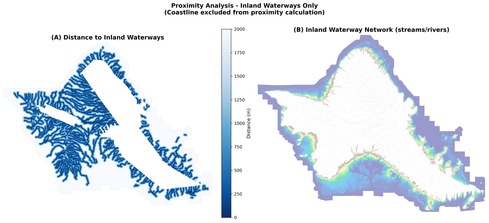

Methodology
Data Sources, Processing, and Model Design
Overview
This analysis follows a four-stage workflow: data acquisition, preprocessing, risk modeling, and population exposure calculation. The approach combines raster-based terrain analysis with vector-based demographic data to produce a composite flood risk assessment.
Data Sources
Elevation Data
USGS 3D Elevation Program (3DEP)
- Source: USGS National Map
- Product: Digital Elevation Model (DEM) for Oahu
- Native resolution: ~1m
- Working resolution: 10m (resampled for computational efficiency)
- Coordinate system: UTM Zone 4N (EPSG:26904)
Hydrological Features
USGS National Hydrography Dataset (NHD)
- Streams and rivers: 2,340 linear features
- Coastline: 4 polygon features
- Used for: Proximity-based risk calculation (streams only)
The proximity component uses only inland streams and rivers, not the coastline. Including the coastline would make the entire island appear high-risk (everything is near the ocean), eliminating meaningful spatial differentiation. Coastal flooding is captured through the elevation component instead.

Demographic Data
US Census Bureau
- Geography: TIGER/Line shapefiles (census block groups)
- Population: American Community Survey 2020 5-year estimates
- Variable: B01003_001E (total population)
- Block groups analyzed: 703
Flood Risk Model
Conceptual Framework
Flood risk is modeled as a weighted combination of two factors:
| Factor | Weight | Rationale |
|---|---|---|
| Elevation | 70% | Primary driver of coastal and pluvial flood risk |
| Proximity to Waterways | 30% | Captures riverine flood risk near streams |
The heavier elevation weighting reflects Oahu’s island geography, where coastal flooding and sea level rise represent the dominant long-term risk.
Elevation Risk Classification
| Category | Elevation | Risk Score |
|---|---|---|
| High | < 3m | 3 |
| Moderate | 3 - 8m | 2 |
| Low | > 8m | 1 |
Thresholds are based on:
- 3m: Approximate reach of storm surge in major hurricanes
- 8m: Upper limit of compound flooding (surge + rainfall)
Proximity Risk Classification
| Category | Distance to Stream | Risk Score |
|---|---|---|
| High | < 100m | 3 |
| Moderate | 100 - 500m | 2 |
| Low | > 500m | 1 |
Distances are calculated using Euclidean distance transform from rasterized waterway features.
Composite Risk Calculation
\[ Risk_{composite} = 0.70 \times Risk_{elevation} + 0.30 \times Risk_{proximity} \]
The continuous composite score (range 1.0 - 3.0) is then classified:
| Final Category | Composite Score |
|---|---|
| Low | < 1.5 |
| Moderate | 1.5 - 2.3 |
| High | > 2.3 |

Population Exposure Analysis
Zonal Statistics
Population exposure is calculated using zonal statistics:
- Overlay census block group polygons on the classified risk raster
- Count pixels in each risk category per block group
- Calculate percentage of area in each risk category
- Allocate population proportionally based on area percentages
\[ Pop_{high-risk} = Pop_{total} \times \frac{Area_{high-risk}}{Area_{total}} \]
Assumptions
This method assumes population is evenly distributed within each block group. In reality, population clusters in developed areas, which may systematically differ in risk level from undeveloped portions of the same block group.
Software & Tools
| Tool | Purpose |
|---|---|
| Python 3.11 | Primary analysis environment |
| GeoPandas | Vector data processing |
| Rasterio | Raster data I/O |
| Rasterstats | Zonal statistics |
| SciPy | Distance transform calculations |
| Folium | Interactive web mapping |
| Matplotlib | Static visualizations |
| Quarto | Website generation |
Code Repository
Analysis notebooks are available in the project repository:
01_data_preprocessing.ipynb- Data acquisition and cleaning02_flood_risk_modeling.ipynb- Risk model implementation03_population_exposure.ipynb- Demographic analysis04_visualization.ipynb- Map and figure generation